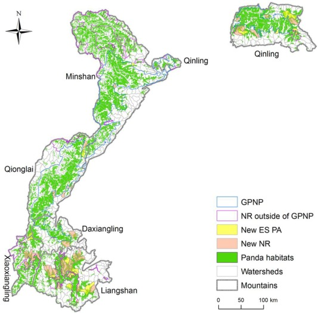

The giant panda (Ailuropoda melanoleuca), also known as the panda bear (or simply the panda), is a bear species endemic to China.[4] It is characterised by its bold black-and-white coat and rotund body. The name "giant panda" is sometimes used to distinguish it from the red panda, a neighboring musteloid. Though it belongs to the order Carnivora, the giant panda is a folivore, with bamboo shoots and leaves making up more than 99% of its diet.[5] Giant pandas in the wild occasionally eat other grasses, wild tubers, or even meat in the form of birds, rodents, or carrion. In captivity, they may receive honey, eggs, fish, yams, shrub leaves, oranges, or bananas along with specially prepared food.[6][7] The giant panda lives in a few mountain ranges in central China, mainly in Sichuan, and also in neighbouring Shaanxi and Gansu.[8] As a result of farming, deforestation, and other development, the giant panda has been driven out of the lowland areas where it once lived, and it is a conservation-reliant vulnerable species.[9][10] A 2007 report showed 239 pandas living in captivity inside China and another 27 outside the country.[11] By December 2014, 49 giant pandas lived in captivity outside China, living in 18 zoos in 13 countries.[12] Wild population estimates vary; one estimate shows that there are about 1,590 individuals living in the wild,[11] while a 2006 study via DNA analysis estimated that this figure could be as high as 2,000 to 3,000.[13] Some reports also show that the number of giant pandas in the wild is on the rise.[14] By March 2015, the wild giant panda population had increased to 1,864 individuals.[15] In 2016, it was reclassified on the IUCN Red List from "endangered" to "vulnerable",[1] affirming decade-long efforts to save the panda. In July 2021, Chinese authorities also reclassified the giant panda as vulnerable.[16] The giant panda has often served as China's national symbol, appeared on Chinese Gold Panda coins since 1982 and as one of the five Fuwa mascots of the 2008 Summer Olympics.
The Qinling panda has a light brown and white pattern Two subspecies of giant panda have been recognized on the basis of distinct cranial measurements, colour patterns, and population genetics.[31] The nominate subspecies, A. m. melanoleuca, consists of most extant populations of the giant panda. These animals are principally found in Sichuan and display the typical stark black and white contrasting colours. The Qinling panda, A. m. qinlingensis,[32] is restricted to the Qinling Mountains in Shaanxi at elevations of 1,300–3,000 m (4,300–9,800 ft). The typical black and white pattern of Sichuan giant pandas is replaced with a light brown and white pattern.[31] The skull of A. m. qinlingensis is smaller than its relatives, and it has larger molars. A detailed study of the giant panda's genetic history from 2012[33] confirms that the separation of the Qinlin population occurred about 300,000 years ago, and reveals that the non-Qinlin population further diverged into two groups, named the Minshan and the Qionglai-Daxiangling-Xiaoxiangling-Liangshan group respectively, about 2,800 years ago.